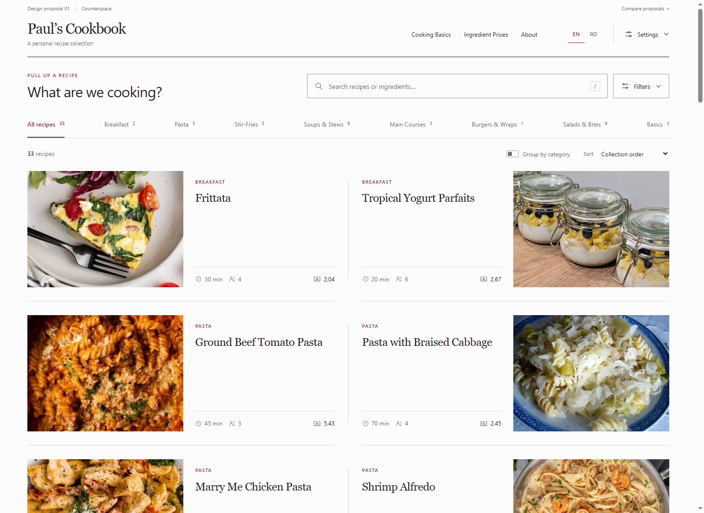
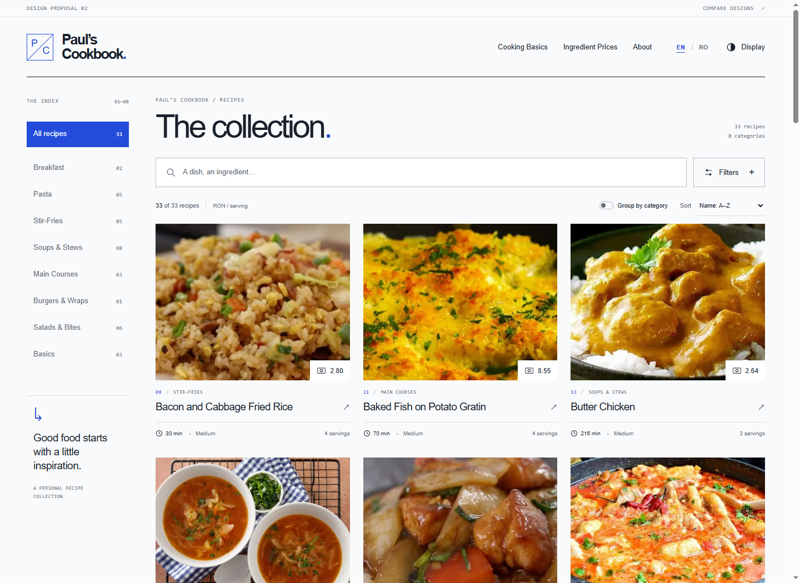
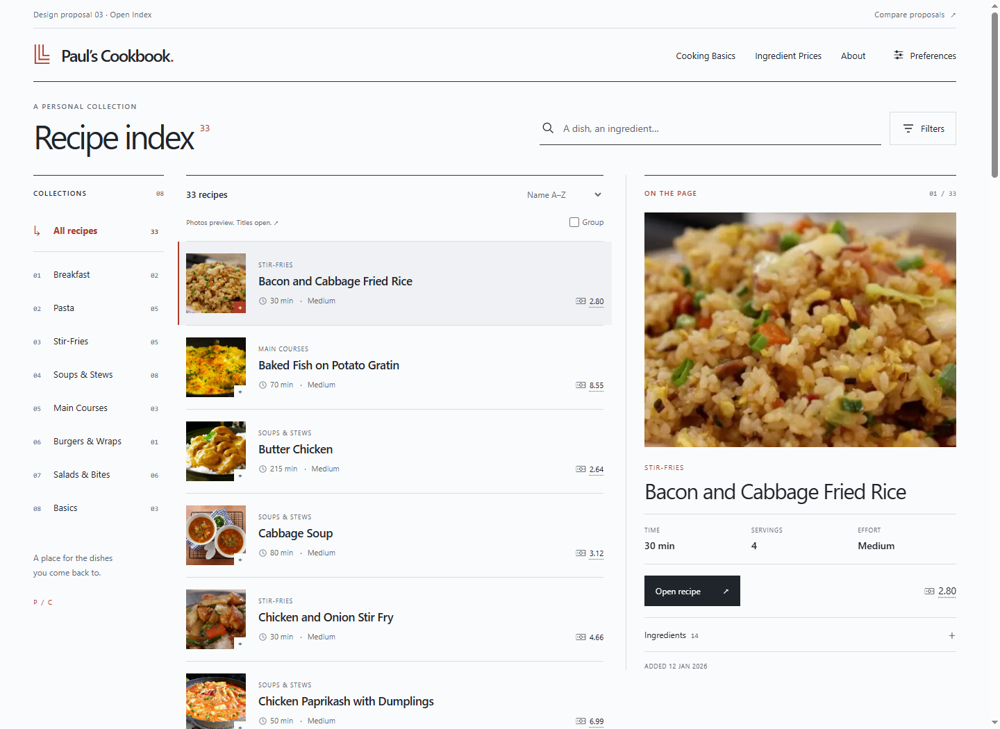

01
Three independent homepage designs, built around your actual recipe collection. Each explores a different way to balance beautiful food photography, effortless browsing, and the controls you already use.

01

02

03
Which one makes choosing a recipe feel easiest? Compare the first screen, the density of information, the photography, and how much attention the controls demand. Try a search, a filter, Romanian text, and a narrower window.
These are standalone HTML mockups, not changes to the application. Recipe and reference links open the existing local website in another tab; browsing and preferences work within each prototype. Cost and time values come from the current catalogue, including its existing estimate limitations.